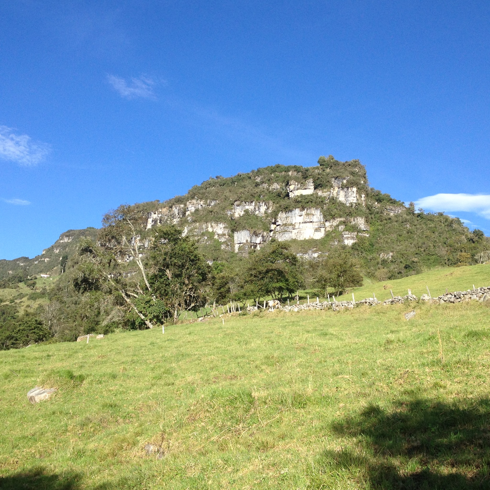

Peña del Cabro
Es un mirador impresionante ubicado en la vereda Buena Vista ubicada a 3200 metros de altura. Ofrece una vista increíble de las montañas y es perfecto para desconectarte en una hermosa finca con animales, aire puro y un ambiente lleno de tradición.
Se ubica en la Vereda Buena vista.